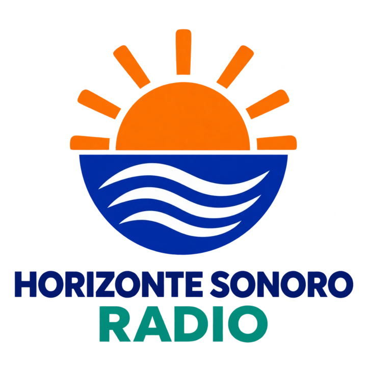
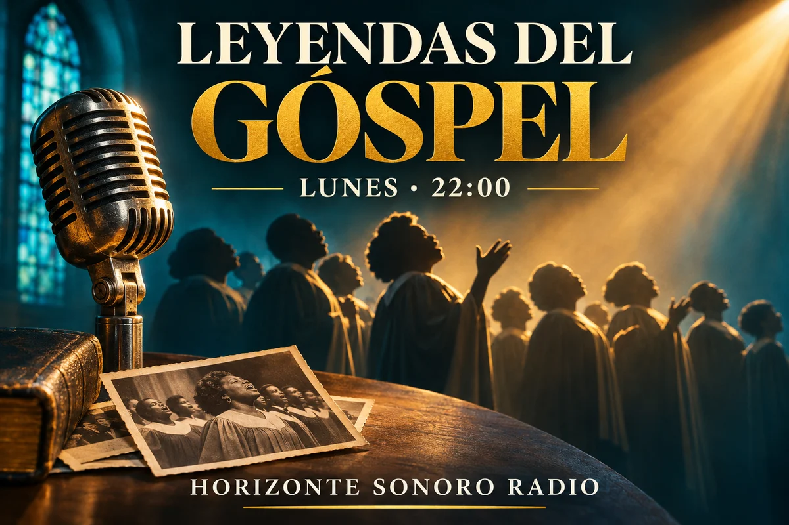
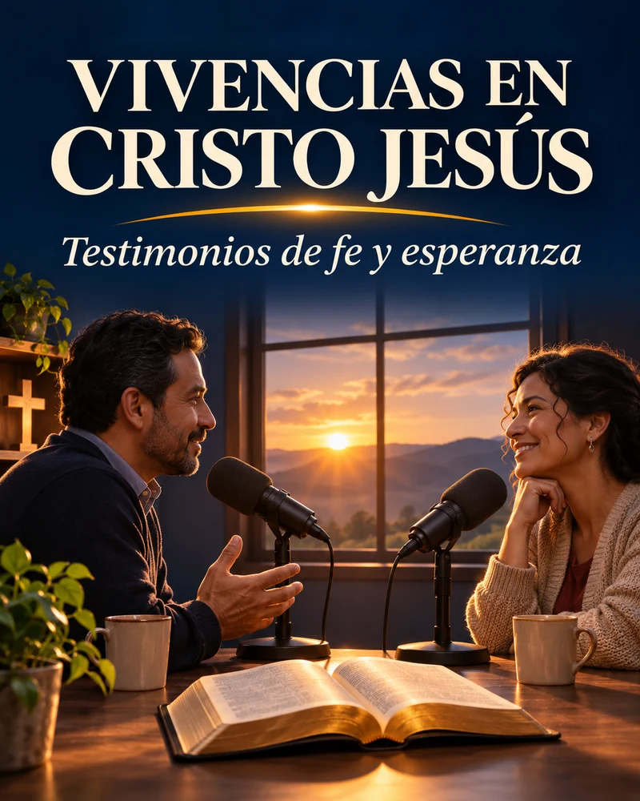
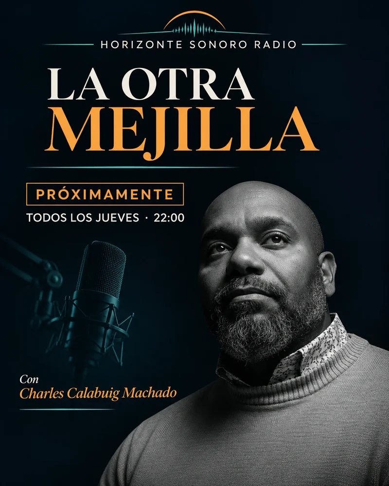
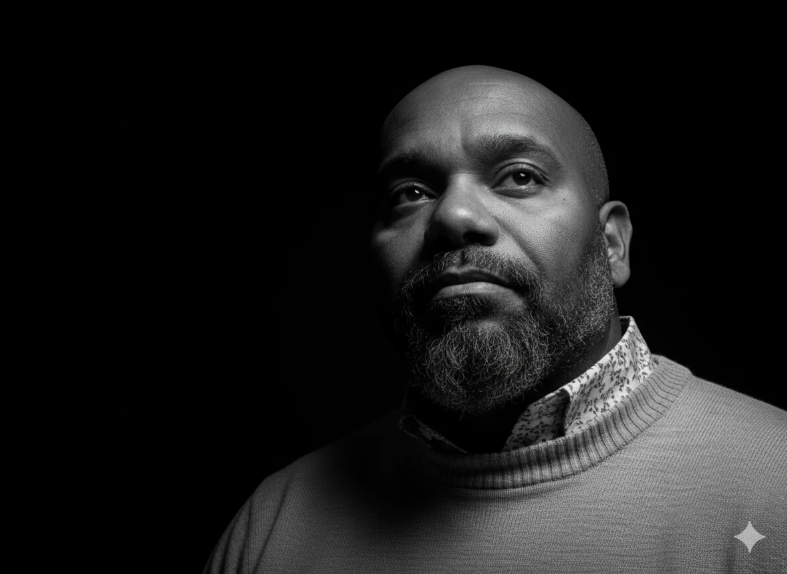
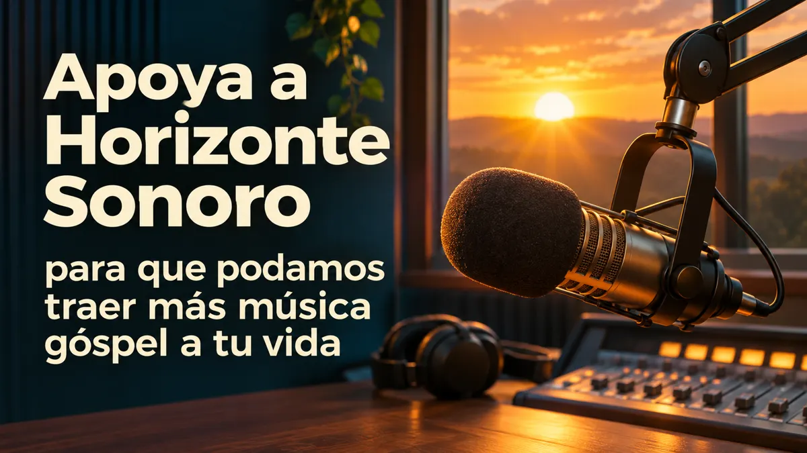

Horizonte Sonoro Radio
Góspel 24/7 en inglés y en español. Coros, grandes voces y clásicos del góspel.
Escuchar en directo
Abrir reproductor de Citrus3
Programas y pódcast

Próximamente
Leyendas del Góspel
Lunes a las 22:00 · Hora de Barcelona
Las voces, las canciones y las historias que marcaron la música góspel.

Próximamente
Vivencias en Cristo Jesús
Todos los martes a las 22:00 · Hora de Barcelona
Testimonios de fe y esperanza.

Próximamente
La Otra Mejilla
Todos los jueves a las 22:00 · Hora de Barcelona
Un espacio de conversación y reflexión con Charles Calabuig Machado.

Fundador
Charles Calabuig Machado
Charles impulsa Horizonte Sonoro Radio desde Barcelona, un espacio para compartir góspel en inglés y en español y llevar un mensaje de fe y esperanza a través de la música.
Apoya Horizonte Sonoro Radio

Donar con PayPal